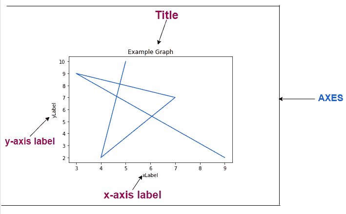
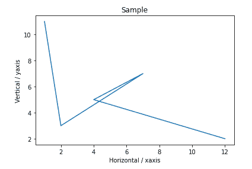
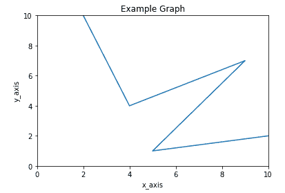
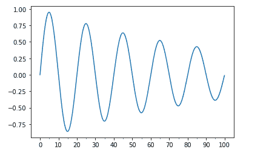

在 Matplotlib 中格式化轴域
原文：https://www.studytonight.com/matplotlib/formatting-the-axes-in-matplotlib
在本教程中，我们将介绍如何在 Matplotlib 中格式化轴。让我们先来学习一下 Matplotlib 中什么是 Axes。
Matplotlib 定线
包含数据空间的图像区域主要称为轴。
Matplotlib 中的“轴”主要包含双轴(如果是【2D】对象)或三轴(如果是 3D 对象)，然后负责数据限制。
**让我们向您展示包含图表的图的不同部分:

您可以根据自己的需求更改 Axes 的不同方面，在本教程的后续章节中，我们将学习如何做到这一点。
1.x 轴和 y 轴的标签
在本节中，我们将介绍如何在 Matplotlib 中标记 x 轴和 y 轴。
以下是 x 轴和 y 轴标注的语法:
对于 x 轴:
Axes.set_xlabel(self, xlabel, fontdict=None, labelpad=None, \*\*kwargs)
对于 y 轴:
Axes.set_ylabel(self, ylabel, fontdict=None, labelpad=None, \*\*kwargs)
这样，借助上述两个函数，您可以轻松命名 x 轴和 y 轴。
标记 x 轴和 y 轴示例:
现在让我们看一个例子，我们将利用上面两个函数来命名 x 轴和 y 轴。
import matplotlib.pyplot as plt
import numpy as np
a = [1, 2, 7, 4, 12]
b = [11, 3, 7, 5, 2]
# below function will create a figure and axes
fig,ax = plt.subplots()
# setting title to graph
ax.set_title('Sample')
# label x-axis and y-axis
ax.set_ylabel('Vertical / yaxis')
ax.set_xlabel('Horizontal / xaxis')
# function to plot and show graph
ax.plot(a, b)
plt.show()
而输出:

2.设置 x 轴和 y 轴的极限
在本节中，我们将介绍如何在 Matplotlib 中设置 x 轴和 y 轴的限制。
以下是 x 轴和 y 轴标注的语法:
对于 x 轴:
Axes.set_xlim(self, left=None, right=None, emit=True, auto=False, \*, xmin=None, xmax=None)
功能参数:
左**右**
这两个参数在浮动并且是可选的
数据坐标中的左 xlim 为起点，右 xlim 为终点。如果您将
None传递给它，那么它将保持限制不变。自动
该参数在
bool中，也是可选的。如果要开启 x 轴的自动缩放，那么这个参数的值应该是真，这个参数的假值表示关闭自动缩放(这是默认动作)
None值保持不变。xmin， xmax
这两个参数分别相当于左和右，如果您将将值传递给两个 xmin 和 left 或 xmax 和 right，它会导致错误。
返回值:
这将返回右侧和左侧值，即(浮动，浮动)
对于 y 轴:
Axes.set_ylim(self, bottom=None, top=None, emit=True, auto=False, \*, ymin=None, ymax=None)
功能参数:
底部和顶部
这两个参数在浮动并且是可选的。
数据坐标中的底部叶立德(即起点)和顶部叶立德(即终点)。如果您将
None传递给它，那么它将保持限制不变。自动
该参数在
bool中，可选。如果要打开 y 轴的自动缩放，那么这个参数的值应该是真，这个参数的假值意味着关闭自动缩放，
None值保持不变。ymin，ymax
这两个参数分别相当于底部和顶部，如果您将值传递给 xmin 和底部或 xmax 和顶部，则会导致错误。
返回值:
这将返回底部和左侧值，即(浮动，浮动)
设置 x 轴和 y 轴的限制示例:
现在让我们看一个例子，我们将利用以上两个函数来设置 x 轴和 y 轴的极限。
import matplotlib.pyplot as plt
import numpy as np
x = [2, 4, 9, 5, 10]
y = [10, 4, 7, 1, 2]
# create a figure and axes
fig, ax = plt.subplots()
ax.set_title('Example Graph')
ax.set_ylabel('y_axis')
ax.set_xlabel('x_axis')
# set x, y-axis limits
ax.set_xlim(0, 10)
ax.set_ylim(0, 10)
# function to plot and show graph
ax.plot(x, y)
plt.show()
以下是输出:

3.主要和次要刻度
在 Matplotlib 中，记号基本上是 x 轴和 y 轴的值。基本上次要刻度是主要刻度的划分(像厘米和毫米，其中 CM 可以是主要刻度，MM 可以是次要刻度)。
我们有两个类Locator和Formatter来控制滴答声:
Locator类确定刻度将显示在哪里。而
Formatter类主要控制刻度的格式。
您必须从 matplotlib 导入这两个类:
1 .多重定位符()
该函数有助于在某个基数的倍数上放置刻度。
2。格式化器
它将使用一种字符串格式，例如:‘% d’或‘% 1.2f’或‘% 1.1f cm’来格式化刻度标签。
注意: 这里需要注意的是次要刻度默认为关闭，它们可以在没有标签的情况下打开，只需设置次要定位器，而次要刻度标签可以在次要格式化程序的帮助下打开。
主要和次要刻度示例:
让我们看一个例子，
import matplotlib.pyplot as plt
import numpy as np
from matplotlib.ticker import (MultipleLocator, FormatStrFormatter,
AutoMinorLocator)
t = np.arange(0.0, 100.0, 0.1)
s = np.sin(0.1 * np.pi * t) * np.exp(-t * 0.01)
fig, ax = plt.subplots()
ax.plot(t, s)
# Make a plot with major ticks that are multiples of 10 and minor ticks that
# are multiples of 5\. Label major ticks with '%d' formatting but don't label
# minor ticks.
ax.xaxis.set_major_locator(MultipleLocator(10))
ax.xaxis.set_major_formatter(FormatStrFormatter('%d'))
# For the minor ticks, use no labels; default NullFormatter.
ax.xaxis.set_minor_locator(MultipleLocator(5))
plt.show()
以下是输出:

总结:
在本教程中，我们介绍了在 matplotlib 图形中格式化坐标轴的各种方法，包括为坐标轴添加标签、为坐标轴设置限制以及添加主要/次要刻度。